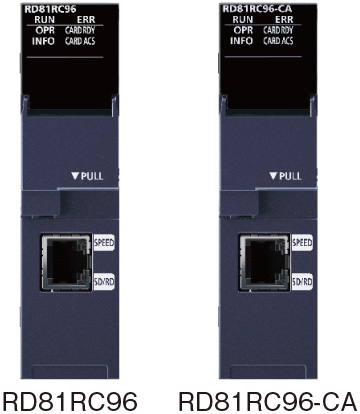
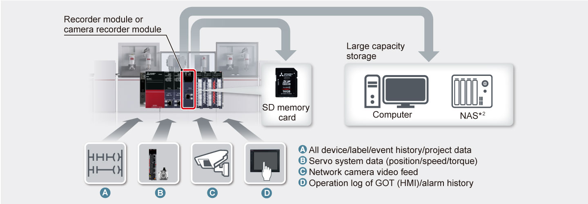
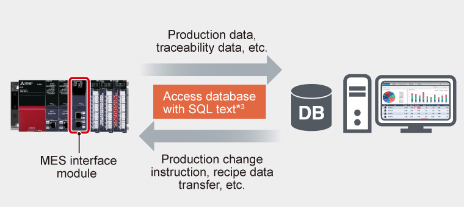
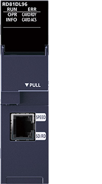
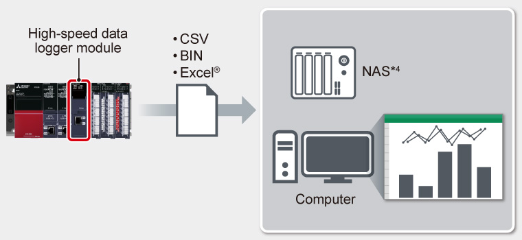
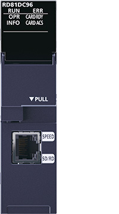
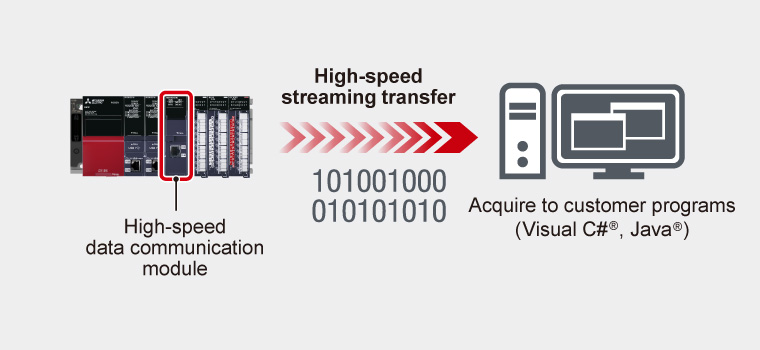

Controllers MELSEC iQ-R Series Fitur Produk -Informasi lanjutan-

Modul informasi tingkat lanjut
Siklus pengumpulan dan analisis data produksi untuk perbaikan diperlukan untuk mencapai "peningkatan rasio operasi melalui pemeliharaan preventif", "peralatan dan jalur produksi berkecepatan tinggi", "ketertelusuran", dan "penghematan energi". Modul informasi tingkat lanjut memungkinkan komunikasi data dengan sistem TI dan pengontrol yang dapat diprogram, mewujudkan koordinasi antara sistem TI dan lantai pabrik.
Sederhanakan analisis kesalahan melalui perekaman data peralatan yang ekstensif

RD81RC96
Recorder module
RD81RC96-CA
Camera recorder module
- Rekam dengan stempel waktu
per pemindaian pengontrol - Semua rekaman riwayat perangkat/label
/peristiwa - Pengaturan target perekaman yang mudah
- Perekaman gambar
kamera yang luas*1
- *1.Hanya didukung oleh modul perekam kamera.

- *2.Penyimpanan Terpasang Jaringan
Hubungkan pengontrol yang dapat diprogram dan basis data dengan mudah

RD81MES96N
MES interface module
- Mudah diatur tanpa program
- Akses langsung ke database

- *3.Secara otomatis menghasilkan SELECT, UPDATE, DELETE, INSERT, dll.
Hubungkan data menggunakan protokol komunikasi yang aman dan terbuka
Contoh data yang dapat digunakan untuk ketertelusuran dan pemeliharaan

RD81DL96
High-speed data logger module
- Pengambilan sampel data berkecepatan tinggi
dengan pengaturan yang mudah - Langsung dipindahkan ke Excel®

- *4.Penyimpanan Terpasang Jaringan

RD81DC96
High-speed data communication module
- Transfer streaming berkecepatan tinggi
secara real-time - Mendukung pemrograman yang sangat fleksibel

Tujuan data/tipe data/aplikasi setiap modul
| Nama produk | Perekam | Perekam kamera | Antarmuka MES | Server OPC UA | Pencatat data berkecepatan tinggi | Komunikasi data berkecepatan tinggi |
|---|---|---|---|---|---|---|
| Data destination | Computer/ NAS (file server) SD memory card |
Computer/ NAS (file server) SD memory card |
Widely available/ open source database |
Computer (OPC UA client) |
Computer/ NAS (file server) SD memory card |
Computer (user program) |
| Data type | All device/label/ event history/ project data |
All device/label/ event history video data/ project data |
Preset device data | Preset device data | Preset device data | Preset device data |
| Applications |
|
|
|
|
|
|